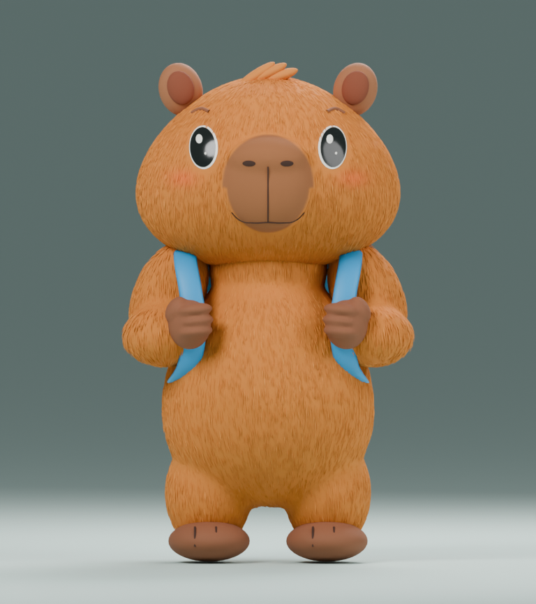
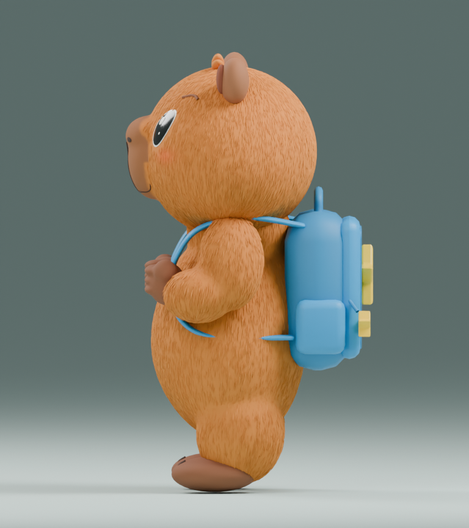
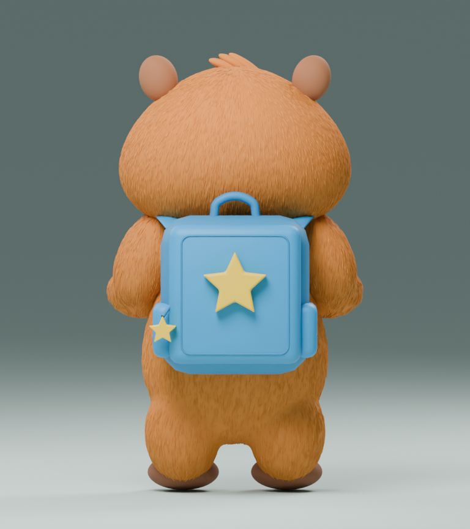
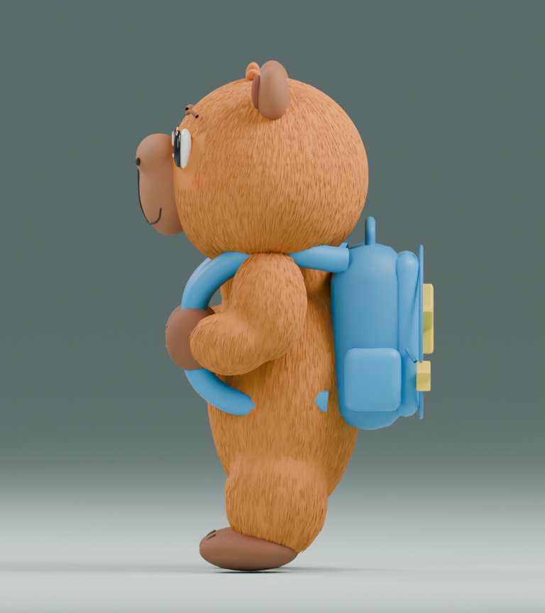

ETAPA 02a · AFINACIONES v005Capibara: volumen y rostro afinados
Abdomen más abultado, dedos con volumen, hocico integrado en una sola malla con la cabeza, ojos proyectados sobre la cara y correas aplanadas. Cuatro renders reales del mismo modelo.
Abrir modelo 3D interactivo · Descargar GLB · Blender · Referencia aprobada · Catálogo de producción
 v005 · tres cuartos
v005 · tres cuartos
v005 · frente
v005 · perfil y abdomen
v005 · espaldaComparación de perfil

v004 · anteriorv005 · hocico y ojos integrados; barriga redondeada226.374 triángulos · GLB 9,66 MB. Escultura estática de revisión; sin rig ni animaciones. Falta optimización para móvil y validación en PlayCanvas. Afinaciones ejecutadas, no aprobación artística automática ni réplica exacta de la ilustración.